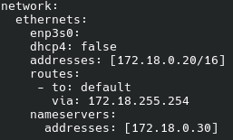
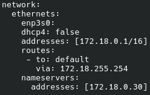

Retour
Consignes
Configurations Apache
Domaine Labannu
Domaine Local
Test Noms de Domaine
Domaine Labannu
Domaine Local
Configurations VM
Configuration VM Labannu
Configuration VM PC01S300
Configuration VM Webvislab
Configuration Réseaux VM
Compte-rendu Slowloris
Slowloris Attacker
Slowloris Patch
Tuto SSH Gitlab
Webvislab

PC01S300
